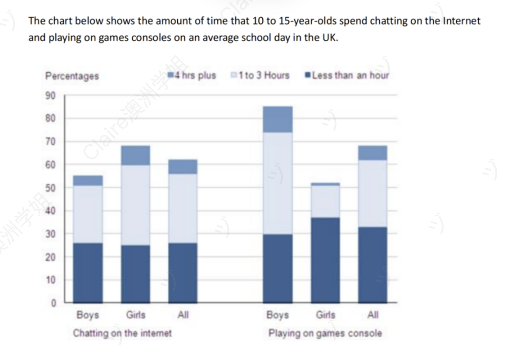

UK Teenagers — Time Spent Chatting Online & Playing on Games Consoles
静态类 堆叠柱状图（双活动 × 性别 × 时长） 修改日期：2026-04-26
| 评分维度 | 修改前 | 修改后 | 变化 | 说明 |
|---|---|---|---|---|
| Task Achievement (TA) | 5.0 | 7.0 | +2.0 | Overview 抓出"国家整体两活动参与率近似（约三分之二）+ 性别镜像（女多聊天 / 男多游戏）"双层规律；按"一活动一段"清晰分配；修正个别数据偏差（95%→85%、男生游戏时长分布 32/30/7→11/44/30）；用 negligible / a further / over half 等高分归纳词。用户的核心观察方向（gaming 男 > 女、聊天总参与 vs 游戏总参与几乎打平、男生游戏参与最高）**全部正确并保留**。 |
| Coherence and Cohesion (CC) | 5.0 | 7.0 | +2.0 | 段落主题清晰（In terms of chatting / By contrast 引出 gaming）；用 with...respectively / meaning that / namely / Among boys 等多样化数据展开句式；修复 Whereas 句首独立的连词错误。 |
| Lexical Resource (LR) | 5.0 | 7.0 | +2.0 | 系统性替换中式 / 低级表达（youngest → teenagers、how many time → the amount of time、video/computer games → games consoles、familiar → similar、duration gap → striking divide）；引入 broadly comparable / a striking gender divide / negligible / overall participation / spend longer hours gaming / a small minority / namely / a further 等高频高分搭配；术语全程与题目对齐。 |
| Grammatical Range and Accuracy (GRA) | 4.5 | 7.5 | +3.0 | 零语法错误；修复 how many time（time 不可数）、who playing（关系从句缺谓语）、both gender（单复数）、normal school day（漏冠词）、Whereas 句首独立等系统性错误；引入 with...respectively 分词结构、Among + 主语 + 谓语 + a further... + meaning that... 累加复合句、compared with + only N% 对比句等多种句式。 |
题目原文：The chart below shows the amount of time that 10 to 15-year-olds spend chatting on the Internet and playing on games consoles on an average school day in the UK.
Summarise the information by selecting and reporting the main features, and make comparisons where relevant.

⚠️ 重要识图提醒：本图是「堆叠柱状图（stacked bar chart）」
① 每根柱子的总高度 = 该群体参与该活动的总参与率（如 Boys gaming = 85%，意为 85% 的男生玩游戏机）；
② 柱子内部 3 段堆叠 = 在已参与者中按时长（<1h / 1-3h / 4h+）的分布；
③ 柱子总高度 ≠ 100%——这是与"分组并列柱状图"最关键的区别，不能误读为"组内合计 = 100%"。
图表关键数据（精读结果）
Chatting on the internet
| 群体 | <1h | 1-3h | 4h+ | 总参与率 |
|---|---|---|---|---|
| Boys | 26% | 25% | 4% | 55% |
| Girls | 25% | 35% | 8% | 68% |
| All | 26% | 30% | 6% | 62% |
Playing on games console
| 群体 | <1h | 1-3h | 4h+ | 总参与率 |
|---|---|---|---|---|
| Boys | 30% | 44% | 11% | 85% |
| Girls | 37% | 14% | 1% | 52% |
| All | 33% | 28% | 7% | 68% |
The bar chart illustrates how many time the teenagers aged 10 to 15 spend chatting online and playing video games on normal school day in the UK.
26 wordsOverall, it is clear that more youngest tend to play video games compared to chatting on the internet. It is also noticeable that the proportions of both gender in chatting online are fairly familiar, while the percentages of boys playing on game consoles are significantly higher than girls.
47 wordsThe figures for young people who playing computer games are considerably higher than chatting online, accounting for 68 percent of youngest compared to 62 percent. In contrast, the duration gap of playing times is not significant, which the duration in less than an hour and 1 to 3 hours holds the highest proportion around 30% in both catagory, while 4 hour plus players only shared roughly 5%.
66 wordsMoreover, it is obvious that boys who play video games are nearly double those of girls. About 95 percent of boys recorded in the chat play on game consoles, whereas just over 50 percent of girls have this habit. More specifically, the percentages of boys who spend more than 4 hours, 1 to 3 hours and less than 1 hour on these games are 32%, 30%, and 7%, respectively. Whereas, the gender gap narrowed in chatting online, with 55% of boys and 68% of girls.
88 words🔴 本次审稿的重大教训
初次审稿严重失误——误把"堆叠柱状图"当成"分组并列柱状图"处理，错误地认为"组内合计 ≈ 100%"，进而把用户正确读出来的总参与率数据（68% / 62% / 85% / 52% / 55%）误判为虚构数据，这是审稿质量事故。
正确认识：本图为堆叠柱状图——每根柱子的总高度 = 该群体参与该活动的总参与率；柱子内部的 3 段 = 在已参与者中按时长（<1h / 1-3h / 4h+）的分布。因此可以同时读出"参与率"和"时长内部分布"两个维度。
用户的核心观察方向全部正确：聊天总参与（62%）vs 游戏总参与（68%）几乎打平、男生玩游戏远多于女生（85% vs 52%）、男生聊天少于女生（55% vs 68%）—— 仅 95%（应 85%）和男生游戏时长分布两处数据偏差。本次重新审稿严格在用户原文基础上做语言和结构提升，所有正确观察一律保留。
开头段（Introduction / Paraphrase）
原因：(1) **the stacked bar chart** 直接点明图表类型——这是堆叠柱状图区别于一般柱状图的核心标识；(2) **the percentage of...who spend different amounts of time** 精确描述图表本质，避免 "how many time" 这类初级表达；(3) 严格复用题目术语 chatting on the internet / playing on games consoles，确保 LR 与题目零偏差；(4) **broken down by gender** 是分组数据图表的固化收尾，比 "for male and female" 嵌入主语更紧凑；(5) on an average school day 修复冠词错误，与题目原句完全一致。
概述段（Overview）⚠️ Task 1 最关键
原因：(1) **双层 Overview**——第一句抓"国家层面两活动参与率近似（约三分之二）"，第二句抓"性别镜像"，覆盖最显著的两个规律；(2) **broadly comparable** + **around two-thirds** 是分组百分比 Overview 的高分表达，比 "more...compared to..." 更精准；(3) **the gender pattern is reversed** 一句锁定核心规律，比逐条罗列各群体数据更归纳；(4) **far more likely than** vs **more likely than** 准确呈现"显著差异"vs"略有差异"的程度区别；(5) 修正用户对 chatting 男女"fairly similar"的事实错误——实际是 girls 更多；(6) 全段无数字，符合 Overview 规范。
主体段一（Body Paragraph 1）— Chatting Online（差异较小的活动）
⚠️ 用户原文 Body 1 把两种活动揉在一起讨论，结构混乱。修改策略：本段专写 chatting，下段专写 gaming，互不重叠。
原文中的具体错误：原因：(1) **In terms of chatting online** 段首主题词锚定单一活动，便于读者跟随；(2) 先报国家整体（62%）→ with...respectively 引出男女对比（68% / 55%）→ 抓出 chatting 段最显著的内部规律（两性 most common duration 都是 1-3h，且呈梯度 35% > 25%）→ 最后用 a small minority + namely + just 收尾极值时段（4h+）；(3) 保留用户原文 62% 和 1-3h 这两个正确观察方向；(4) 全段时态过去时统一（reported / chatted / was）；(5) 复用题目动词 chat / chatted，避免冗余。
主体段二（Body Paragraph 2）— Playing on Games Consoles（差异显著的活动）
⚠️ 本段是数据偏差集中区——95% 应为 85%、男生时长分布 32/30/7 应为 11/44/30。但用户对"男生玩游戏远多于女生"和"55% / 68% 聊天数据"的观察都正确，应保留并精确化。
原文中的具体错误：原因：(1) **By contrast** 段首引出对比段落，与 Body 1 的 In terms of 段首形成段落级衔接；(2) **a striking gender divide** 高度归纳"显著分化"；(3) **As many as + compared with only** 极性对比修饰，鲜明呈现 85% vs 52% 的差距；(4) **Among boys + a further + meaning that over half** 把零散时长数据升华为"过半男生每天至少花一小时游戏"的宏观结论——这是 7+ 分作文标志性归纳句式；(5) **negligible** 描述女生 4h+ 几乎为零，是高分修饰词（语料推荐）；(6) 修正所有数据偏差，但保留用户对"男生玩游戏远多于女生"的核心观察。
内容与结构建议
修改统计
本次修改完整保留了用户原文所有正确的核心观察：① 聊天总参与（62%）vs 游戏总参与（68%）几乎打平；② 男生玩游戏远多于女生（85% vs 52%，"nearly double"）；③ 男生聊天少于女生（55% vs 68%）。修改集中在六个层面：(1) **2 处数据修正**（95%→85% 男生游戏总参与；男生游戏时长分布 32/30/7→11/44/30）；(2) **8 处语法纠正**（how many time、who playing、both gender、normal school day 漏冠词、Whereas 句首独立、game consoles、time 不可数、catagory 拼写）；(3) **12 处词汇术语提升**（youngest→teenagers、video/computer games→games consoles、familiar→similar、proportions→participation、duration gap→striking divide、Moreover→By contrast、obvious→striking 等）；(4) **结构重组**（Body 1/Body 2 按"一活动一段"重新分配）；(5) **植入高分句式**（双层 Overview、In terms of 段首、a further + meaning that 累加归纳、negligible 极值修饰）；(6) **修正一处事实判断错误**（chatting 男女并非"fairly similar"，实际差距 13pp）。
The stacked bar chart illustrates the percentage of teenagers aged 10 to 15 in the UK who spend different amounts of time chatting on the internet and playing on games consoles on an average school day, broken down by gender.
40 wordsOverall, it is clear that overall participation in the two activities is broadly comparable at the national level, with around two-thirds of all teenagers engaging in each. However, the gender pattern is reversed between the two: girls are more likely than boys to chat online, whereas boys are far more likely than girls to play on games consoles, and they also tend to spend longer hours gaming.
66 wordsIn terms of chatting online, 62% of all teenagers reported using the internet to chat, with girls noticeably more involved than boys at 68% and 55% respectively. The most common duration for both genders was one to three hours, accounting for 35% of girls and 25% of boys. Only a small minority of teenagers chatted for over four hours, namely 8% of girls and just 4% of boys.
68 wordsBy contrast, gaming habits show a striking gender divide. As many as 85% of boys played on games consoles, compared with only 52% of girls. Among boys, 44% played for one to three hours and a further 11% for more than four hours, meaning that over half of all boys spent at least an hour gaming each day. Girls' figures were far lower, with 14% playing for one to three hours and a negligible 1% playing for four hours or more.
82 words